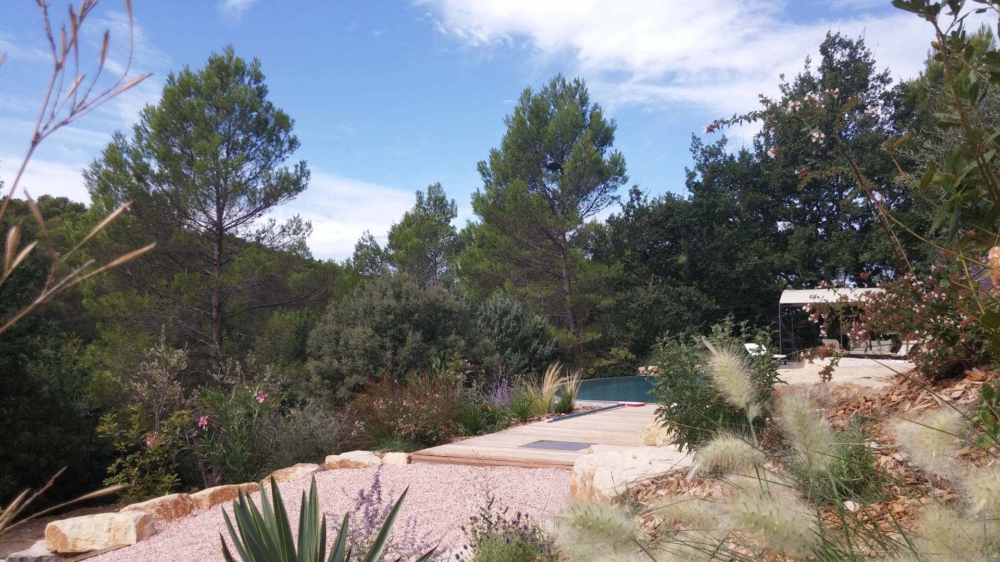

Située seulement à quelques minutes du centre de Carcès, Lei Cadé est une magnifique villa de 155m2 idéalement localisée aux abords d'une zone verte dans un quartier paisible où seules les cigales pourraient perturber la sieste. Sur un terrain en restanque de 2500m2, la propriété dispose de plusieurs terrasses qui vous permettront de jouir de vos repas en famille et de profiter des chaises longues sous le soleil du Midi. La villa dispose également d'une magnifique piscine privative à débordement et d'un terrain de pétanque.